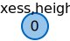
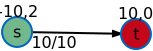

The maximum s-t flow has a value of 6
The maximum flow problem
Suppose that we have a communication network, in which certain pairs of nodes are linked by connections; each connection has a limit to the rate at which data can be sent. Given two nodes on the network, what is the maximum rate at which one can send data to the other, assuming no other pair of nodes are attempting to communicate? (source)
This is a typical instance of a maximum flow problem: given an underlying network, where the edge weights denote the maximum possible capacity per edge, one wants to find out how much can be transerred over the edges from the source node s to the target node t.
This applet presents the generic Goldberg Tarjan's Push Relabel algorithm which calculates the maximum s-t flow on a directed, weighted graph in a fairly good runtime. More classical but slower algorithms are Ford-Fulkerson/Edmonds-Karp/Dinic algorithms
What do you want to do first?

Which graph do you want to execute the algorithm on?
Start with an example graphs:
Modify it to your desire:
- To create a node, make a double-click in the drawing area.
- To create an edge, first click on the output node and then click on the destination node.
- The edge weight can be changed by double clicking on the edge.
- Right-clicking deletes edges and nodes.
Download the modified graph:
DownloadUpload an existing graph:
What next?
Legende
|  | node with exess flow and height function |
| current node | |
| active nodes | |
| edge with flow ≤ cap | |
|  | s-t flow |
Legende
Algorithm status
First choose a source node
Click on a node to select it as the source/starting node s
Then choose a target node
Click on a node to select it as the target/sink node t
Goldberg-Tarjan Push-Relabel maximum flow algorithm
Now the algorithm can begin. Click on next to start it
Initializing the preflow
Set f(e) = c(e) for all edges emanating s and set f(e) = 0 for all other edges. Add all nodes v ≠ t having (s,v) ∈ E to the queue of active nodes.
Initializing the distance function
For each node v ≠ s set d(v) to the shortest directed path from v to t in the network G where the length of a path is the number of edges of the path. (In particular, set d(t) = 0). This can be done in time O(|V| + |E|) by a breadth first search starting at t and using all edges in the opposite direction. The source s isn’t reached by this BFS. We initialize d(s) by setting d(s) = |V|.
Main loop
As long as the queue containing the active nodes isn’t empty pop the first node v from the front of the queue and apply a push/relabel-operation to v.
Check for admissible push operations
While e(v) > 0 and the residual network G'=(V,E') contains an edge that is legal with respect to the current distance function ( i.e., there is an edge e' = (v, w) having d(v) = d(w) + 1 ) apply a push
Push
Push δ = min{e(v), c'(e')} amount of flow from v to w.
More precisely, if e' ∈ E' is a forward edge with respect to an edge e of G, increase the preflow f(e) of e by δ, and if e' is a backward edge, then decrease the preflow f(e) of e by δ.
By doing so, e(v) is decreased by δ, and e(w) is increased by δ. If w ≠ s,t, and if w wasn't active before, w becomes active, and is added at the end of the queue containing the active nodes.
Check for an admissible relabel operation
If v has still excess, i.e., e(v) > 0, and if there is no legal edge emanating from v in the residual network, then apply a relabel operation.
Relabel
Increase the distance d(v) of v to the value
min{ d(w)+1 | (v,w) is edge of the residual network G'}
add v at the end of the queue after that.
Finished
The algorithm terminated with a maximum flow value of:
s ← pick(v)
t ← pick(v)
BEGIN
(* Initializing the preflow *)
FOR ALL e = (u,w) ∈E DO
IF u == s THEN f(e) ← c(e)
ELSE f(e) ← 0
IF u == s AND w ≠ t THEN queue.add(w)
(* Initializing the distance function *)
d(s) = |V|
FOR ALL v != s ∈ V DO
d(v) ← number of segments on directed path to t
(* Main Loop *)
WHILE queue ≠ ∅ DO
v ← queue.pop()
WHILE e(v) > 0 AND ∃ e'=(v,w) ∈ E' with d(v) == d(w) + 1
(* PUSH *)
push min{e(v),c'(e')} flow from v to w
IF w != s,t AND w ∉ queue THEN queue.add(w)
IF e(v) > 0 AND ∄ e'=(v,w) ∈ E' with d(v) == d(w) + 1
(* RELABEL *)
d(v) ← min{d(w)+1 | (v,w) &isin E'
queue.add(v)
END
Variable status
| v | queue | e' | c' |
|---|---|---|---|
| - | ∅ | - | - |
Log of algorithm execution
Beim Wechsel des Tabs wird der Algorithmus abgebrochen.
Du kannst die Anwendung in einem anderen Browserfenster öffnen, um parallel einen anderen Tab zu lesen.

{kind=link}